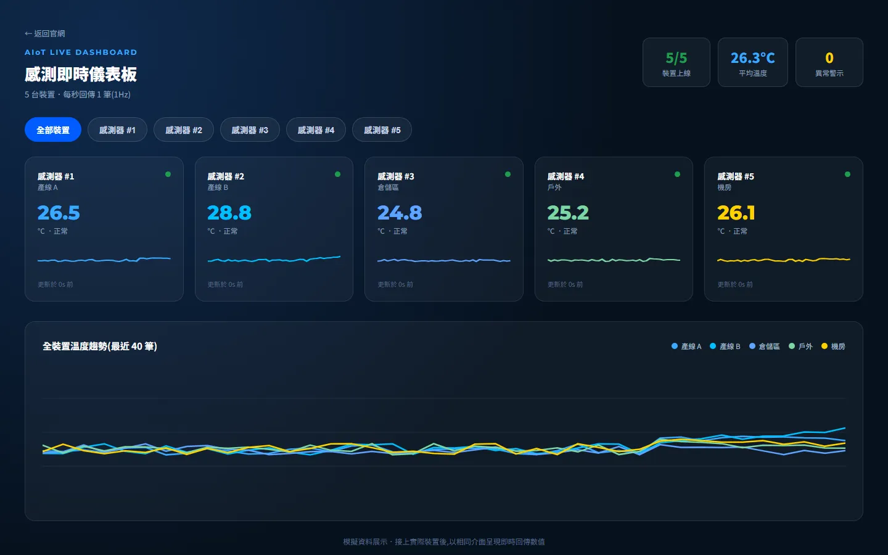
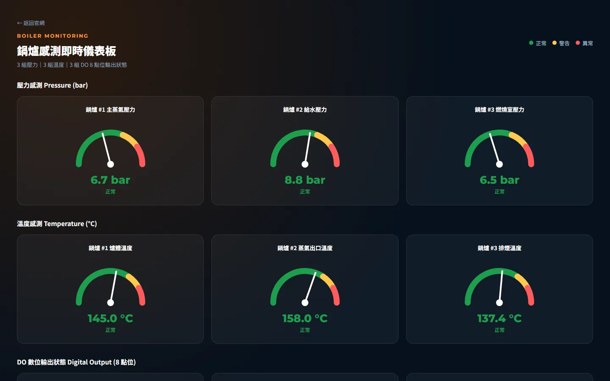
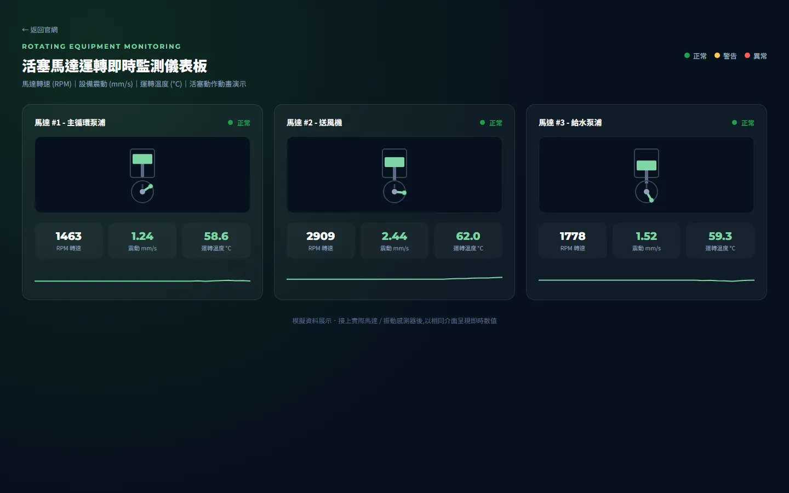

Vom Konzept zur Serie —
zuverlässige smarte Hardware.
Embedded-Systeme, KI-Bildverarbeitung, LoRa- / Funktechnik und Industrieautomation. Ein Entwicklungsteam in Taiwan begleitet Ihr Produkt von Hardware und Firmware über KI bis zur Serienfertigung.
- STM32 / ESP32
- YOLO / OCR
- LoRaWAN
- PCB-Antenne
- Modbus / MQTT
- OEM / ODM

- 2009Gegründet in Tainan, Taiwan
- 17J.+Erfahrung in der Embedded-Entwicklung
- 6Kernkompetenzen aus einer Hand
- 7PhasenVom Konzept zur Serienfertigung
Sechs Kompetenzen, ein Team
Hardware, Firmware, KI und Funk unter einem Dach — weniger Schnittstellen, schnellere Iterationen und geringeres Projektrisiko.

Embedded-Systeme
Schaltungsdesign, Firmware und Treiber für STM32, ESP32, PIC und ARM Linux.
Mehr erfahren
KI-Bildverarbeitung
YOLO-Objekterkennung, OCR und Edge-KI für Fertigungslinien und Außeneinsatz.
Mehr erfahren
LoRa-Funk
SX12xx-HF-Design und LoRaWAN-Netze — kilometerweite Reichweite bei minimalem Verbrauch.
Mehr erfahren
HF-Antennendesign
Kundenspezifische PCB-, IFA- und Patch-Antennen, abgestimmt mit dem Netzwerkanalysator.
Mehr erfahren
Industrieautomation
SPS, RS485 / Modbus, CAN und MQTT — Maschinendaten und Fertigungslinien vernetzen.
Mehr erfahren
Kundenspezifische ODM
Leiterplattenlayout, Prototypen, Vorserie und Serienfertigung — inklusive Prüfung und Zertifizierung.
Mehr erfahrenEntwicklung aus einer Hand
Sie brauchen mehr als ein Produkt — Sie brauchen ein Team, das Ihre Idee vollständig umsetzt. Jede Phase hat klare Ergebnisse und Abnahmekriterien.
- KonzeptCONCEPT
Anforderungen, Spezifikation, Budget
- Hardware
Schaltplan und Leiterplattenlayout
- Firmware
Treiber, Protokolle, Anwendung
- KIAI ALGORITHM
Modelltraining und Edge-Deployment
- PrototypPROTOTYPE
Muster und Funktionsprüfung
- ZertifizierungCERTIFICATION
Zuverlässigkeit und Konformität
- SerieMASS PRODUCTION
Qualitätskontrolle, termingerecht

Warum Balin
Wir sind nicht nur ein Elektronik-Designbüro, sondern Ihre ausgelagerte Entwicklungsabteilung. Vom ersten Gespräch an sprechen Sie direkt mit den Ingenieuren, die Ihr Produkt entwickeln.
- Seit 2009 — 17 Jahre Embedded-Entwicklung
- KI-Bildverarbeitung und Integration von KI-Agenten
- LoRa- / HF-Antennendesign mit Abgleich am Gerät
- Fundierte STM32- / ESP32-Firmwareentwicklung
- Erfahrung mit Industrieprotokollen und SPS
- Funkdatenübertragung und Fernsteuerung
- OEM- / ODM-Entwicklung aus einer Hand
- Direkter Draht zu den Ingenieuren
Anwendungen
Von der Maschinenüberwachung bis zur Umweltsensorik in der Landwirtschaft: Wir machen aus Technik Lösungen für reale Probleme.

Zustandsüberwachung von Anlagen
Kritische Anlagen wie Kessel, Motoren und Pumpen werden per Rundgang geprüft — Störungen fallen oft erst nach dem Ausfall auf.
Zur Lösung
Smart Farming und Umweltsensorik
Felder, Gewächshäuser und Außenanlagen sind weitläufig, ohne Strom und Netz — Verkabelung ist teuer.
Zur LösungKI-Sichtprüfung in der Fertigung
Manuelle Sichtprüfung ermüdet und ist uneinheitlich — bei steigender Stückzahl kommt die Qualitätssicherung nicht mehr mit.
Zur LösungAIoT-Monitoring live
Testen Sie unsere Monitoring-Dashboards und sehen Sie, wie Ihre Maschinendaten in der Cloud aussehen.

AIoT-Sensordashboard live
Fünf Temperaturknoten in Echtzeit online — Trenddiagramme und Alarme auf einen Blick.
Demo öffnen ↗
Kesselüberwachung
Druck- und Temperaturanzeigen sowie der Status digitaler Ausgänge (DO) eines simulierten Kesselhauses.
Demo öffnen ↗
Motorzustandsüberwachung
Drehzahl, Vibration, Temperatur und Animation zur Beurteilung rotierender Maschinen.
Demo öffnen ↗Fachartikel
Praxiswissen aus unseren Embedded-, Funk- und KI-Projekten.

LoRa-Frequenzplanung: AS923 in Taiwan, EU868 in Europa und die Wahl von SF und BW
Taiwan nutzt für LoRa 920–925 MHz (AS923), Europa EU868. Wir erklären die Zusammenhänge zwischen Frequenzband, Spreizfaktor (SF), Bandbreite (BW), Reichweite und Batterielaufzeit.
Artikel lesenPCB-Antennen richtig wählen: IFA, Meander, Patch und Anpassung
PCB-Antennen sind günstig und montagefrei, reagieren aber empfindlich auf Platinenfläche und Bauteile in der Nähe. Ein Vergleich gängiger Bauformen und wie man sie mit dem Netzwerkanalysator anpasst.
Artikel lesen
Low-Power-Design mit dem ESP32: Deep Sleep in der Praxis
Der ESP32 kommt im Deep Sleep mit Mikroampere aus — trotzdem messen viele Produkte mehrere Milliampere. Die Ursache liegt meist in der Beschaltung, nicht im Chip.
Artikel lesenBereit für Ihr Projekt?
Sprechen Sie direkt mit unseren Ingenieuren und erhalten Sie ein kostenloses Konzept — von der Idee bis zur Serienfertigung.